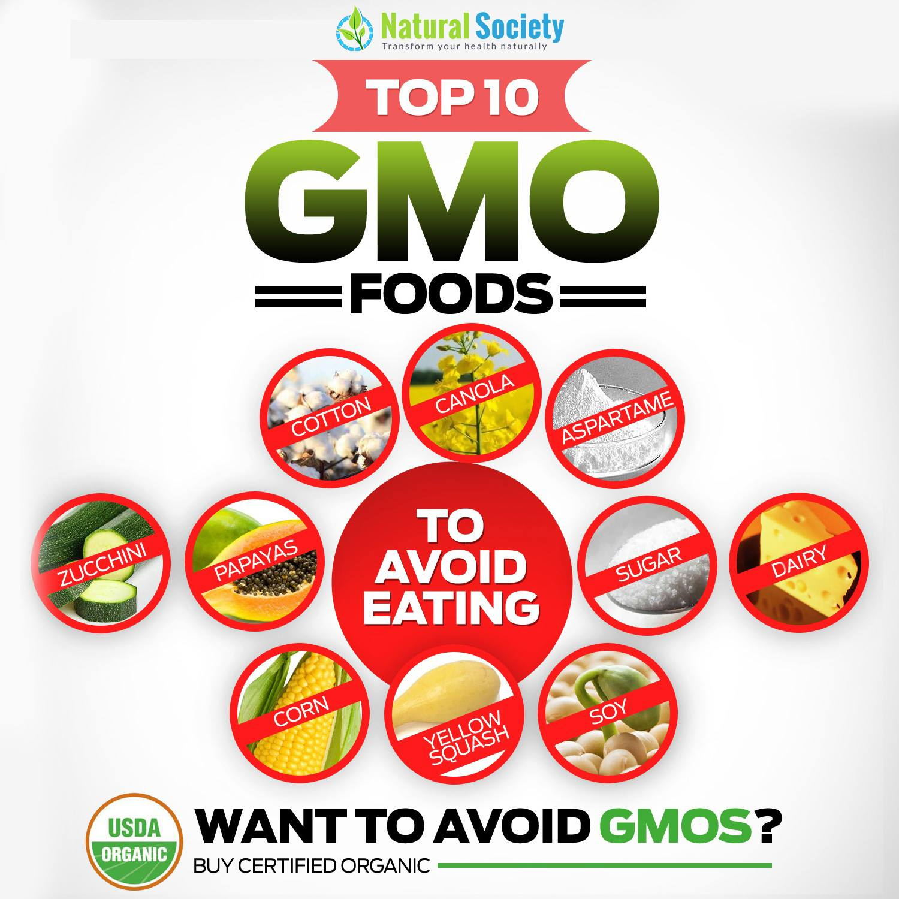

The George Mateljan Foundation is a not-for-profit Foundation with no commercial interests or advertising. Our mission is to inform our viewers on the healthiest way to cook and eat
At WHFoods, we discourage consumption as well as development of genetically modified foods. Given the rapid rise of these foods in the marketplace, we would also like to see labeling of all foods (both present and future) that are genetically modified. Our perspective on genetically modified foods is described in detail in the following article. The reasons behind our opposition to genetically modified—also called genetically engineered (GE) foods—may be somewhat different, however, than many readers might expect. Therefore, our goal in this article is to provide you with comprehensive and reliable information about GE foods and our reasons for discouraging incorporation of GE foods into your meal plan.
In the United States, 170 million acres of GE crops were planted in 2014, and this number represented about half of all planted acreage. Approximately 90% of all soy, corn, and sugar beet crops grown in the U.S. are currently GE. Canola (rapeseed) plantings are about 60% GE, and some other food-related GE crops include cotton (the origin of cottonseed oil), potato, and tomato. Worldwide, GE crops are planted on approximately 450 million acres of land, making U.S. production roughly 35% of total global GE food production. Partially due to widespread incorporation of corn components (for example, high fructose corn syrup) and soy components (for example, isolate soy protein) into food products, approximately 70% of all prepackaged multi-ingredient food items in U.S. groceries are estimated to contain at least one GE component. This widespread presence of GE foods in the U.S. marketplace has happened quite quickly. Two decades ago (in 1993), zero acres of commercial GE crops were planted in the U.S., and virtually no GE food components were present in the U.S. food supply. So, within a relatively short 20-year period, virtually all U.S. children and adults have started consuming GE foods in their meal plans. Given the magnitude and abruptness of this change, it seems like special monitoring and evaluation would be important to understand the impact of these foods. However, as you will see in the paragraphs below, no safeguards have been put into place with respect to GE foods.
The widespread and rapid introduction of GE foods into the U.S. food supply is extremely difficult to study from a nutritional or health perspective since there is no labeling requirement for GE foods and pre-market studies on GE foods are strictly voluntary. Beginning in 2000, the U.S. Food and Drug Administration (FDA) began asking producers and marketers of GE foods to submit plans 120 days pre-market. But this regulatory requirement did not include mandatory testing of any kind or mandatory submission of test results, if conducted. Since 1992, the FDA has used a legal standard of "substantial equivalence" to evaluate the safety and desirability of GE food. According to this standard, genetically modified food plants must resemble unmodified plants aesthetically, nutritionally, "anti-nutritively," and in terms of allergic potential. ("Anti-nutritively" in this regulatory language refers to the level of substances like oxalates or phytates that might change levels of nutrient absorption in GE versus non-GE foods. In this "anti-nutritive" category, "substantial equivalence" means that the level of substances like oxalates or phytates in a GE food must be similar to their level in the same food which has not been genetically engineered.) Yet, determination of "substantial equivalence" is viewed as an industry versus government responsibility, and all safety testing on GE foods is considered voluntary by the FDA. Among the various aspects of "substantial equivalence" listed above, allergic potential is an aspect of GE foods that we find especially important to evaluate. Our reasons for wanting evaluation of allergic potential are described in upcoming sections. However, in order to understand the nature of allergic potential and GE foods, it is first necessary to understand why plant breeding—which is a longstanding and widely adopted practice in agriculture—is categorically different than genetic engineering.